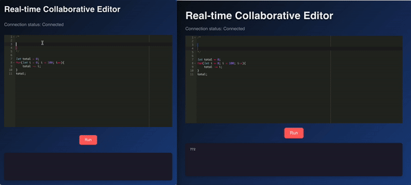

Building a Real-time Collaborative Code Editor
In this post, I’ll walk you through the creation of a real-time collaborative code editor using React on the client side and Node.js with ShareDB on the server side. This project allows multiple users to edit code simultaneously, with real-time updates reflected across all clients.
Project Overview
This project uses technologies like React for the client interface, ShareDB for document synchronization, WebSockets for real-time communication, and MongoDB for persistent document storage. The editor also supports live code execution via VM2 on the server.
Implementation Challenges
- Cursor Synchronization: One particularly tricky part of real-time collaboration is synchronizing user cursor positions across clients. If a user’s cursor or selection changes, that information needs to be sent to all other users. I implemented this using ShareDB’s presence feature, which allows tracking each user’s presence and actions in the document. The challenge here was ensuring that cursor movements are updated in real-time and rendered correctly for each user, without causing flickering or incorrect positioning. I had to dynamically create and manage markers in the AceEditor for each remote user’s cursor and ensure they were removed once the user left the session.
- Document Syncing: Handling Real-time Collaboration One of the core features of this project is real-time collaboration, which means that multiple users should be able to edit the same document simultaneously. This was a key challenge, as it required dealing with multiple types of data updates—some coming from the server and others from local users. To solve this, I used ShareDB with WebSockets. ShareDB allowed us to handle operational transformations (OT), a method that ensures that document changes are synchronized in the correct order across clients. This ensures that if multiple users edit the document at the same time, their changes are applied without overwriting each other. Managing conflicts, cursor synchronization, and maintaining a smooth user experience took careful planning and testing.
- Secure Code Execution: The editor allows users to run code within a secure sandboxed environment on the server. However, allowing users to execute arbitrary code poses a huge security risk, especially if malicious code attempts to access the server’s file system or other resources. To mitigate this risk, I used the VM2 package, which provides a sandboxed environment for running untrusted code with limited access to the server’s resources. Additionally, I set time limits on code execution to prevent infinite loops from blocking the server. Implementing proper error handling within the VM2 sandbox was another challenge. If user code caused an exception or consumed too many resources, I had to ensure the server would catch the error gracefully and respond to the client with useful feedback, without crashing the entire application.
Tech Stack
- React: Used for the client-side UI with AceEditor integration for code editing.
- ShareDB: Real-time collaboration and document synchronization across clients.
- WebSockets: Enables real-time, low-latency communication between server and clients.
- MongoDB: Used to store document states for persistence and collaboration.
- VM2: A secure sandbox environment for running JavaScript code on the server.
How It Works
Backend: Node.js and ShareDB
The server was built using Express to handle HTTP requests and WebSockets for real-time communication. ShareDB provided the functionality to sync document changes between the clients. I also set up a MongoDB database to persist document states, so that users could leave and rejoin a session without losing their work.
// Server code snippet
const ShareDB = require("sharedb");
const WebSocket = require("ws");
const ShareDBMongo = require("sharedb-mongo");
const db = ShareDBMongo('mongodb://localhost:27017/sharedb');
const backend = new ShareDB({ db, presence: true });
const wss = new WebSocket.Server({ server });
wss.on("connection", (ws) => {
const stream = new WebSocketJSONStream(ws);
backend.listen(stream);
});
A major decision was to implement presence tracking with ShareDB. This allowed the server to track and broadcast each user’s connection status, cursor movements, and even typing indicators. This presence feature greatly enhanced the collaborative experience.
Frontend: React and AceEditor
For the client, I chose React due to its component-based architecture and ease of integrating third-party libraries like AceEditor. AceEditor provided an out-of-the-box solution for code editing, but it also required customizations to handle features like autocomplete, syntax highlighting, and multi-user cursor tracking.
I implemented ReconnectingWebSocket on the client to ensure that if a WebSocket connection was dropped (due to network issues, for example), the client would automatically try to reconnect. This was crucial for maintaining seamless collaboration.
// Client code snippet
useEffect(() => {
const socket = new ReconnectingWebSocket('ws://localhost:3001');
const connection = new sharedb.Connection(socket);
const doc = connection.get('examples', 'textarea');
doc.subscribe((err) => {
if (err) throw err;
setContent(doc.data.content || '');
doc.on('op', (op, source) => {
if (!source) {
applyOpToAce(op);
}
});
});
}, []);
I also integrated AceEditor with ShareDB so that changes made in the editor were reflected in real-time across clients. React’s state management made it easy to keep track of the document’s content, cursor positions, and other collaborative features.
Conclusion
The overall development process required balancing real-time features, security concerns, and performance optimization, while ensuring that the user experience remained smooth and intuitive. The result is a real-time collaborative code editor that supports multi-user editing and code execution, all within a responsive, secure environment.
This project demonstrates the power of combining React, Node.js, and ShareDB to build a real-time collaborative code editor. The real-time document synchronization, combined with secure code execution, makes this project an exciting example of what modern web technologies can achieve.
Here is a little demo of the project:

Here is the link to the repo where the code is. Happy reading and have a good day!
Posted by: Aidan Vidal
Posted on: Septemeber 24, 2024